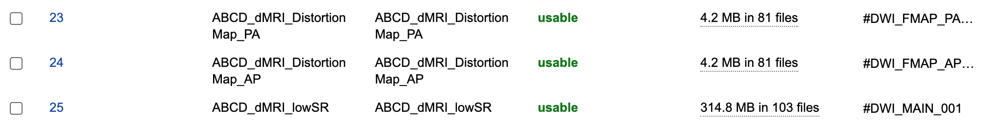
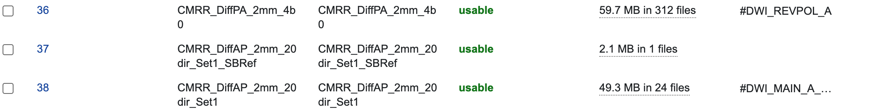
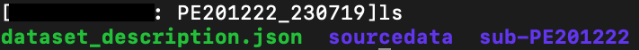

User Documentation
Note
This documentation assumes a basic understanding of the command line. Here’s a quick (and free!) crash course if needed.
Tagging your scans
For DWIQC to discover diffusion and fieldmap scans to process, you need to add notes to those scans in XNAT. This can either be done via the XNAT interface or through the xnattagger command line tool. To tag via the XNAT interface, you can add notes using the Edit button located within the Actions box on the MR Session report page.
Type |
Example series |
Note |
|---|---|---|
DWI |
|
|
PA_FMAP |
|
|
AP_FMAP |
|
|
The image below displays an MR Session report page with populated notes.
Note
Note that if a DWI scan has corresponding PA and AP scans, they should be assigned matching numbers. For example, #DWI_MAIN_001 would correspond to #DWI_FMAP_PA_001 and #DWI_FMAP_AP_001.

xnattagger
xnattagger automates the process of tagging scans in your XNAT project. xnattagger can optionally be run in the get and tandem modes of DWIQC using the --run-tagger argument. The default tagging convention is the same as seen here (and above), but can be configured to user specifications. Please see the xnattagger documentation for details.
DWI scan |
run |
|---|---|
|
1 |
|
2 |
|
999 |
Running the pipeline
For the time being, DWIQC can only be run outside of XNAT on a High Performance Computing system with access to gpu nodes (or a local gpu node). Please see the developer documentation for installation details before proceeding.
Overview
With DWIQC and it’s necessary containers installed, you’re ready to analyze some diffusion data! Let’s start by giving you a broad idea of what DWIQC does.
DWIQC was designed with the goal of speeding up the quality check workflow of diffusion weighted imaging data. Ideally, DWIQC would be run on subjects while the study is ongoing as to help researchers catch problems (excessive motion, acquisition issues, etc.) as they happen, rather than discovering them after the data has been collected and the problems cannot be rectified. That being said, running DWIQC on previously acquired data can certainly provide helpful information.
DWIQC is built on the prequal and qsiprep processing packages. Both of these tools are excellent in their own right. We found that by running both of them, we can maximize our understanding of the data quality and glean additional key insights. Please take the necessary time to understand both tools and the theoretical approach they take to analyzing diffusion data. You may find that you only want to use one of them in your analysis (which is possible using the --sub-tasks command). DWIQC was built completely in python and we welcome anyone to peruse the codebase and make build suggestions (hello, pull requests!).
install-containers, get, process and tandem modes
DWIQC is broken down into four different “modes”. As you saw in the installation section, the install-containers mode is used upon initial setup of your DWIQC environment. get, process and tandem modes are used once everything has been properly installed and you’re ready to start working with the data. We’ll start by looking at get mode.
Note
The following sections assume you’ve activated your python virtual environment as demonstrated in the installation section. Shown again here:
source dwiqc/bin/activate
get mode
Note
get mode is only applicable if you have an XNAT instance (such as CBS Central) you’re going to interact with. Please feel free to skip to the process mode section if you’re only going to use DWIQC outside of XNAT.
get: Overview
get mode downloads data from XNAT to your local compute environment and converts it to BIDS format. Take a look at the official docs if you’re unfamiliar with BIDS.
Before using get mode, I strongly recommend creating an xnat_auth alias using the excellent yaxil python library. It’s not stictly necessary to do so, but it will make your life easier. Example code will use an xnat alias. yaxil comes as a part of the DWIQC installation (yaxil is a DWIQC dependency).
get: The Config File
Diffusion imaging is a burgeoning field with huge potential to deepen our understanding of the brain. While exciting, it also means that acquisition parameters, study designs, and theoretical analysis frameworks vary greatly. We’ve decided to rely heavily on yaml config files for downloading data to accomodate as many approaches as possible. The yaml config file tells DWIQC which scans to download from your XNAT instance based on information from each scan’s notes field. It also tells DWIQC what to do with those scans once they’ve been downloaded (i.e. BIDS formatting). Let’s dive in!
Many diffusion study designs fall into two general camps (with many sub-variations, mind you). Let’s discuss them here:
This type of design means that each “main” diffusion scan (or set of “main” diffusion scans) has a fieldmap acquired for it both in the AP and PA directions. Here’s an example in XNAT:
Scans 23 and 24 serve as the dedicated fieldmaps, 23 as the PA fieldmap and 24 as the AP fieldmap. Scan 25 is the “main” diffusion scan.
The other popular design choice is having just one scan serve as the fieldmap. In most cases, this scan is acquired in the reverse phase encode direction relative to the “main” diffusion scan. So if the “main” scan is acquired in the PA direction, the reverse polarity scan would be acquired in the AP direction. Here’s an example in XNAT:
Scan 36 is the reverse polarity scan, acquired in the PA direction, while scan 38 is the “main” diffusion a scan acquired in the AP direction. Scan 37 is an SBRef scan not used here.
Note
You may notice the tags on the far right of the examples above (e.g. #DWI_REVPOL_A, #DWI_MAIN_001). The tags don’t have to be anything in particular; it’s completely up to you.
Now that you have a general idea of how diffusion scans are frequently collected we can get into the anatomy of the yaml config file. We’ll look at an example for each of the above experimental designs. A quick note about yaml: Indentation, hyphens, spaces, and colons are very important to the yaml structure. Be sure to maintain the exact structure seen here when editing.
dedicated fieldmap design
This looks a bit hairy, I admit, but it’s not as wild as it seems. I would recommend copying and pasting this code block into a text editor and reading my breakdown of it side-by-side so that you’re not constantly trying to read and scroll at the same time.
dwiqc:
dwi_main:
tag:
- .*(^|\s)#dwi_main(?P<run>_\d+)?(\s|$).*
bids_subdir:
- dwi
acquisition_group:
- A
fmap_ap:
tag:
- .*(^|\s)#dwi_fmap_ap(?P<run>_\d+)?(\s|$).*
bids_subdir:
- fmap
direction:
- AP
acquisition_group:
- A
fmap_pa:
tag:
- .*(^|\s)#dwi_fmap_pa(?P<run>_\d+)?(\s|$).*
bids_subdir:
- fmap
direction:
- PA
acquisition_group:
- A
t1w:
tag:
- .*(^|\s)#T1w(?P<run>_\d+)?(\s|$).*
bids_subdir:
- anat
The first thing to notice is that dwiqc is the first layer of this whole thing. This is simply a way to keep everything orderly and tidy. Next, there are four 1st level layers: dwi_main, fmap_ap, fmap_pa and t1w. Each one of those labels represents a different scan within an XNAT session.
The dwi_main layer has three sub-elements: tag, bids_subdir and acquisition_group. tag refers to the tag you’ve put into the notes field for your “main” diffusion scan. The tag can be anything, it just has to be consistent. In the case of our example here, as DWIQC iterates through all of the scans of an XNAT session it makes use of regular expressions to find a scan with a #dwi_main (case insensitive) followed by a digit (e.g. 001) in the notes field. Once it finds a scan with a matching tag, it downloads it.
The bids_subdir element tells DWIQC where to put the scan in the BIDS hierarchy. In this case, it will place the matching scan into the ‘dwi’ directory.
acquisition_group serves as a way to link “main” diffusion scans to its fieldmaps. It’s not relevant in this example, however there are cases when a study might have several different sets of “main” diffusion scans and fieldmaps. acquisition_group helps group these sets together. Here, the acquisition_group is A (you’ll notice the fieldmaps have the same value).
Now let’s take a look at one of the fieldmap sub-layers. fmap_pa has four sub-elements as opposed to the three that dwi_main has.
Just as before, the tag element tells DWIQC what to look for as its looking through all the scans in a session. Here, it uses a regular expression to match to any scan that has a #dwi_fmap_pa (case insensitive) followed by a digit (e.g. 001) in the notes field.
bids_subdir tells DWIQC where to download the scan to in the BIDS hierarchy, fmap in this case.
direction is a new element. It refers to the primary phase encode direction of the scan. PA for this scan. You can include this element for dwi_main but it’s usually not necessary when there are dedicated fieldmaps.
acquisition_group is the same as above. We want this fieldmap scan to be linked to the main diffusion scan so we give it the same acquisition_group value: A
reverse polarity fieldmap design
Kudos to you for making it this far! Hopefully this section will be a bit more palatable since we’ve already covered most aspects of the config file. Take a look at the example config file below. Once again, I would recommend copying and pasting it into a text editor and looking at it side-by-side with my description.
dwiqc:
dwi_main_a:
tag:
- .*(^|\s)#dwi_main_a(?P<run>_\d+)?(\s|$).*
bids_subdir:
- dwi
direction:
- AP
acquisition_group:
- A
dwi_main_b:
tag:
- .*(^|\s)#dwi_main_b(?P<run>_\d+)?(\s|$).*
bids_subdir:
- dwi
direction:
- AP
acquisition_group:
- B
revpol_a:
tag:
- .*(^|\s)#dwi_revpol_a(?P<run>_\d+)?(\s|$).*
bids_subdir:
- fmap
direction:
- PA
acquisition_group:
- A
revpol_b:
tag:
- .*(^|\s)#dwi_revpol_b(?P<run>_\d+)?(\s|$).*
bids_subdir:
- fmap
direction:
- PA
acquisition_group:
- B
t1w:
tag:
- .*(^|\s)ANAT_1.0_ADNI(?P<run>_\d+)?(\s|$).*
bids_subdir:
- anat
You’ll notice that this config file is very similar to the example shown above, with a few key differences.
dwi_main_a has the same sub elements as seen above for dwi_main plus the direction element. The phase encode direction is important to specify here because there are no dedicated fieldmaps. DWIQC needs to know the phase encode direction for these study designs as it prepares the data to be distortion corrected.
You’ll also notice that this study design included more than one main diffusion scan and more than one reverse polarity scan. This is where the acquisition_group element becomes vital. By specifying the different scans as part of the A or B group, the reverse polarity and main scans get properly associated with one another. For example, dwi_main_b and revpol_b both have B specified as the value for their acquisition_group element, while dwi_main_a and revpol_a have A as the value.
Those differences aside, the config files both use the tag, bids_subdir, direction and acquisition_group elements in very similar ways.
Note
Only the tag and bids_subdir elements are required in the config file. If you have no need for direction or acquisition_group, you don’t have to use them!
Phew! You made it through. Try your hand at modifying the examples above for your own dataset. Best way to learn is by doing!
get: Required Arguments
get mode requires four arguments: 1) —label 2) —bids-dir 3) —xnat-alias 4) —download-config
--label refers to the XNAT MR Session ID, which is found under XNAT PROJECT —> SUBJECT —> MR_SESSION
--bids-dir should be the absolute path to the desired download directory. If the directory doesn’t exist, it will be created./usr/home/username/project_data/MR_Session
cd into the desired directory and execute pwd to get a directory’s absolute path.
--xnat-alias is the alias containing credentials associated with your XNAT instance. It can be created in a few steps using yaxil.--download-config is the absolute path to the yaml config file that tells DWIQC which tags it should look for (see the xnattagger docs) and the config file section of get mode for more tagging details.get: Executing the Command
Command Template:
dwiQC.py get --label <MR_SESSION> --bids-dir <PATH_TO_BIDS_DIR> --xnat-alias <ALIAS> --download-config <PATH_TO_CONFIG_FILE>
Command Example:
dwiQC.py get --label PE201222_230719 --bids-dir /users/nrg/PE201222_230719 --xnat-alias ssbc --download-config /users/nrg/dwiqc_config.yaml
Note
Ensure that every MR_Session has its own dedicated BIDS download directory. DWIQC will not run properly otherwise.
get: Expected Output
After running DWIQC get you should see two new directories and one new file under your BIDS dir similar to what’s shown here:
dataset_description.json conatains very basic information about the downloaded data. It’s required by BIDS format. sourcedata contains the raw dicoms of all the downloaded scans. sub-PE201222 (will differ for you) contains the downloaded data in proper BIDS format. If you enter the directory, you should see the subject session, then three more directories: anat, dwi and fmap. Those directories contain the MR Session’s respective anatomical, diffusion and diffusion fieldmap data. If one of the directories is missing or empty, verify that your session’s scans have been tagged correctly and that the data is downloadable.
get: Common Errors
The most common get mode error doesn’t necessarily look like an error on the surface, meaning that there won’t be an ERROR message that pops up in your terminal. Usually, the error will be discovered when you check your download directory and find that not all of your desired data was downloaded. This problem almost always stems from get mode being unable to find matches in the scans’ note fields on XNAT. Check your configuration file and be sure that it matches the tagging convention you’re using on XNAT.
get: Advanced Usage
There are a couple get mode optional arguments that are worth noting.
--run-tagger argument along with the --tagger-config argument with a path to the xnattagger config file to run xnattagger with get mode.--dry-run argument.get: All Arguments
Argument |
Description |
Required |
|---|---|---|
|
XNAT Session Label |
Yes |
|
Path to BIDS download directory |
Yes |
|
Alias for XNAT Project |
Yes |
|
Configuration file for downloading scans |
Yes |
|
Run xnattagger |
No |
|
Path to xnattagger config file |
No |
|
Generate list of to-be-downloaded scans |
No |
|
XNAT project Name |
No |
|
URL of XNAT Host |
No |
|
XNAT username |
No |
|
XNAT user password |
No |
process mode
process: Overview
With your data successfully downloaded using get mode (or organized in BIDS format through other means) you are ready to run DWIQC. We recommended running DWIQC in an HPC (High Performance Computing) environment rather than on a local machine. DWIQC will run both prequal and qsiprep and requires gpu compute nodes. DWIQC must be run on gpu nodes for the time being.
process: Required Arguments
process mode requires 5 arguments:
1) —sub 2) —ses 3) —bids-dir 4) —partition 5) —fs-license
--sub is the subject’s identifier in the BIDS hierarchy. If you’ve used get mode to download your data it will be in the --bids-dir directory. In the case of the example we’re using here, it would be PE201222. Remember not to include the “sub-” prefix!--ses is the specific session for your subject according to BIDS format. get mode will place a session direcory one step below the sub-SUBJECT directory and combine the subject and session identifier from XNAT. The example above downloaded data under the XNAT label PE201222_230719, so the session directory will be called ses-PE201222230719. See example below. get mode will remove any non alpha-numeric characters in the --label argument when creating the session name.--bids-dir is the same directory passed to the --bids-dir argument in get mode. It’s the absolute path to the directory where the data is in BIDS format.--partition refers to the name of the partition or cluster where the sbatch jobs will be submitted to. This is generally just the name of your HPC system (e.g. fasse, fasse_gpu, Armis, etc.)--fs-license should be the absolute path to the FreeSurfer license file in your environment. You can obtain a license by downloading FreeSurfer.process: Executing the Command
Command Template:
dwiQC.py process --sub <BIDS_SUBJECT> --ses <BIDS_SESSION> --bids-dir <PATH_TO_BIDS_DIR> --partition <HPC_NAME> --fs-license <PATH_TO_FREESURFER_LICENSE>
Command Example:
dwiQC.py process --sub PE201222 --ses PE201222230719 --bids-dir /users/nrg/PE201222_230719 --partition fasse_gpu --fs-license /home/apps/freesurfer/license.txt
process: Expected Output
DWIQC runtime varies based on available resources, size of data and desired processing steps. Users should expect one session to take 3-5 hours to complete prequal and 7-10 hours to complete qsiprep. Prequal and qsiprep are run in parallel, so total processing time rarely exceeds 10 hours. DWIQC also makes use of the FSL tool eddy quad. Eddy quad runs a series of quality assesment commands to generate images and quantitative metric tables. Eddy quad doesn’t take more than 10 minutes to run in most cases. A successful DWIQC run will contain output from all three of these software packages.
Prequal Output:
To find the prequal pdf report, navigate to the --bids-dir directory you passed to process mode. The pdf will be located under several layers of directories:
derivatives —> dwiqc-prequal —> subject_dir —> session_dir —> sub_session_dir_run__dwi —> OUTPUTS —> PDF —> dtiQA.pdf
Download an example here.
Qsiprep Output:
To find the qsiprep html report, navigate to the --bids-dir directory you passed to process mode. The html file will be located under several layers of directories:
derivatives —> dwiqc-qsiprep —> subject_dir —> session_dir —> sub_session_dir_run__dwi —> qsiprep_output —> qsiprep —> sub-SUBJECT-imbedded_images.html
Download an example here.
Eddy Quad Output:
To find the eddy quad pdf report, navigate to the --bids-dir directory you passed to process mode. It runs on both prequal and qsiprep output. The pdf file will be located under several layers of directories:
derivatives —> dwiqc-prequal —> subject_dir —> session_dir —> OUTPUTS —> EDDY —> SUBJECT_SESSION.qc —> qc.pdf
derivatives —> dwiqc-qsiprep —> subject_dir —> session_dir —> qsiprep_output —> EDDY —> SUBJECT_SESSION.qc —> qc.pdf
Download an example here.
process: Common Errors
A somewhat common error (affects about 5% of subjects) is an Eddy Volume to Volume registration error that looks something like this:

This error means that the FSL tool eddy, which both prequal and qsiprep use in their pipelines, could not find any volumes within a specific shell that did not have intensity outliers. There are three different approaches to solving this problem that have their respective implications:
Note
This error generally only occurs in qsiprep.
To adjust the number of standard deviations, edit a file in your --bids-dir called eddy_params_s2v_mbs.json that was created when you first ran DWIQC. Open the file and change the argument that says --ol_nstd=5 to --ol_nstd=6. Simply running DWIQC again will overwrite the eddy_params_s2v_mbs.json you just edited, so pass the --custom-eddy argument to DWIQC with the path to the newly edited eddy_params_s2v_mbs.json file.
dwiQC.py process --sub PE201222 --ses PE201222230719 --bids-dir /users/nrg/PE201222_230719 --partition fasse_gpu --fs-license /home/apps/freesurfer/license.txt --custom-eddy /users/nrg/PE201222_230719/eddy_params_s2v_mbs.json
process: Advanced Usage
Only a few of the many possible process mode arguments will be discussed here.
--qsiprep-config and --prequal-config allow you to customize the arguments passed to qsiprep and prequal. These are the default qsiprep config and prequal config arguments being passed. Using these config files as a template, you can customize your prequal and qsiprep commands. Example usage: --prequal-config /users/nrg/PE201222_230719/prequal.yaml--xnat-upload indicates that the output from DWIQC should be uploaded to your XNAT project. --xnat-alias (see get mode) must be passed for this argument to work. Example usage: --xnat-upload (just passing the argument is sufficient)--output-resolution allows you to specify the resolution of images created by qsiprep. The default is the same as the input data. Example usage: --output-resolution 1.0--sub-tasks is used to run either just qsiprep or prequal. Example usage: --sub-tasks qsiprep--custom-eddy is used to pass custom FSL eddy parameters to qsiprep as noted under Common Errors. Example usage: --custom-eddy /users/nrg/PE201222_230719/eddy_params_s2v_mbs.jsonprocess: All Arguments
Fill in with box of all possible arguments for process.
Argument |
Description |
Required |
|---|---|---|
|
Subject label (excluding “sub-“) |
Yes |
|
Session label (excluding “ses-“) |
Yes |
|
Path to BIDS directory |
Yes |
|
Name of partition where jobs will be submitted |
Yes |
|
Path to FreeSurfer License |
Yes |
|
BIDS Run Number |
No |
|
Resolution of Output Data |
No |
|
Path to prequal command .yaml file |
No |
|
Path to qsiprep command .yaml file |
No |
|
Turn off GPU functionality |
No |
|
Pass only prequal or qsiprep to be run |
No |
|
Alias for XNAT project |
No |
|
Indicate if results should be uploaded to XNAT |
No |
|
Location for generated reports |
No |
|
Path to customized eddy_params.json file |
No |
tandem mode
tandem: Overview
tandem mode combines the best of both worlds and runs both get and process modes in a single command. tandem mode is only applicable for users hosting data on an XNAT instance and is useful for scripting and batching large numbers of subject data. See get mode and process mode documentation for further explanation of their functionality.
tandem: Required Arguments
tandem uses a combination of arguments from get and process:
1) —label 2) —bids-dir 3) —xnat-alias 4) —partition 5) —fs-license
--label refers to the XNAT MR Session ID, which is found under XNAT PROJECT —> SUBJECT —> MR_SESSION
--bids-dir should be the absolute path to the desired download directory. If the directory doesn’t exist, it will be created.--xnat-alias is the alias containing credentials associated with your XNAT project. It can be created using yaxil documentation.--partition refers to the name of the partition or cluster where the sbatch jobs will be submitted to. This is generally just the name of your HPC system (e.g. fasse, fasse_gpu, Armis, etc.)--fs-license should be the absolute path to the FreeSurfer license file in your environment. You can obtain a license by downloading FreeSurfer.tandem: Executing the Command
Command Template:
dwiQC.py tandem --label <bids_subject> --bids-dir <path_to_bids_dir> --xnat-alias <xnat-alias> --partition <HPC_name> --fs-license <path_to_freesurfer_license>
Command Example:
dwiQC.py tandem --label PE201222_230719 --bids-dir /users/nrg/PE201222_230719 --xnat-alias ssbc --partition fasse_gpu --fs-license /home/apps/freesurfer/license.txt
tandem: Expected Output
Please see process mode expected output documentation regarding expected output.
tandem: Common Errors
Please see get mode common errors and process mode common errors documentation regarding common errors.
tandem: Advanced Usage
All the advanced usage arguments for tandem mode are the same as the get mode and process mode advanced usage arguments. They appear here as well for convenience.
--no-tagger argument.--xnat-config in tandem mode.--dry-run argument. You will also have to specify an output json file: -o test.json. That json file will contain metadata about the scans tandem mode would download. This can be useful for testing.--qsiprep-config and --prequal-config allow you to customize the arguments passed to qsiprep and prequal. By default, these are the qsiprep config and prequal config arguments being passed. Using these config files as a template, you can customize your prequal and qsiprep commands. Example usage: --prequal-config /users/nrg/PE201222_230719/prequal.yaml--xnat-upload indicates that the output from DWIQC should be uploaded to your XNAT project. --xnat-alias (see get mode) must be passed for this argument to work. Example usage: --xnat-upload (just passing the argument is sufficient)--output-resolution allows you to specify the resolution of images created by qsiprep. The default is the same as the input data. Example usage: --output-resolution 1.0--no-gpu enables users without access to a gpu node to run DWIQC. Note that some advanced process features are not available without gpu computing. Example usage: --no-gpu (just passing the argument is sufficient)--sub-tasks is used to run either just qsiprep or prequal. Example usage: --sub-tasks qsiprep--custom-eddy is used to pass custom FSL eddy parameters to qsiprep as noted under common errors. Example usage: --custom-eddy /users/nrg/PE201222_230719/eddy_params_s2v_mbs.jsontandem: All Arguments
Argument |
Description |
Required |
|---|---|---|
|
XNAT Session Label |
Yes |
|
Path to BIDS download directory |
Yes |
|
Alias for XNAT Project |
Yes |
|
Name of partition where jobs will be submitted |
Yes |
|
Path to FreeSurfer License |
Yes |
|
Project Name |
No |
|
Configuration file for downloading scans |
No |
|
Turn off xnattagger |
No |
|
Generate list of to-be-downloaded scans |
No |
|
Path to |
No |
|
BIDS Run Number |
No |
|
Resolution of Output Data |
No |
|
Path to prequal command .yaml file |
No |
|
Path to qsiprep command .yaml file |
No |
|
Turn off GPU functionality |
No |
|
Pass only prequal or qsiprep to be run |
No |
|
Alias for XNAT project |
No |
|
Indicate if results should be uploaded to XNAT |
No |
|
Location for generated reports |
No |
|
Path to customized eddy_params.json file |
No |
Understanding the Report Page
Note
This section is only relevant for users uploading DWIQC output to an XNAT instance.
Left pane
The left pane is broken up into several distinct sections. Each section will be described below.
Summary
The Summary pane orients the user to what MR Session they’re currently looking at and various processing details.
Key |
Description |
|---|---|
MR Session |
MR Session label |
Date Processed |
Processing date |
PA Fmap Scan |
PA Fieldmap used |
AP Fmap Scan |
AP Fieldmap used |
DWI Scan |
DWI scan used |
SNR/CNR Metrics
The SNR/CNR Metrics pane displays SNR/CNR metrics computed for each individual shell.
Metric |
From |
Description |
|---|---|---|
B0 SNR |
Eddy Quad (FSL/Both) |
Signal-to-noise ratio for B0 Shell |
BN CNR |
Eddy Quad (FSL/Both) |
Contrast-to-noise ratio for each shell |
Note
Anywhere you see “Eddy Quad (FSL/Both)” means that FSL’s Eddy Quad tool was run on prequal and qsiprep output.
Motion Metrics
The Motion Metrics pane displays motion metrics computed over dwi scan(s).
Metric |
From |
Description |
|---|---|---|
Avg Abs Motion |
Eddy Quad (FSL/Both) |
Estimated amount of all motion in any direction |
Avg Rel Motion |
Eddy Quad (FSL/Both) |
Estimated motion relative to initial head position |
Avg X Translation |
Eddy Quad (FSL/Both) |
Estimated X translation motion |
Avg Y Translation |
Eddy Quad (FSL/Both) |
Estimated Y translation motion |
Avg Z Translation |
Eddy Quad (FSL/Both) |
Estimated Z translation motion |
Files
The Files pane contains the most commonly requested files. Clicking on any of these files will display that file in the browser.
File |
From |
Description |
|---|---|---|
B0 Average |
Eddy Quad (FSL/Both) |
BO Shell Average Image |
Brain Mask |
Qsiprep |
Gray Matter, White Matter and Pial Boundaries |
FA Map |
Prequal |
Fractional Anisotropy Map |
MD Map |
Prequal |
Mean Diffusivity Map |
Eddy Outlier Sices |
Prequal |
Plot of Slices with Motion Outliers |
T1 Registration |
Qsiprep |
GIF of T1w image to Template Registration |
Denoise |
Qsiprep |
GIF of DWI Image Pre and Post Denoising |
Motion Plot |
Eddy Quad (FSL/Both) |
Translational and rotational motion, displacement |
Prequal Report |
Prequal |
Prequal PDF Report |
Eddy Quad Report |
Eddy Quad (FSL/Both) |
Eddy Quad PDF Report |
Qsiprep Report |
Qsiprep |
Qsiprep HTML Report |
Carpet Plot |
Qsiprep |
Maximum Framewise Displacement Plot |
Note
Clicking on any of the Report files will open the complete report in a new tab in your browser for viewing. You can also download them from the new tab.
Tabs
To the right of the left pane you’ll find a tab container. The following section explains the contents of each tab.
Images
The Images tab displays a zoomed out view of the FA and MD image maps, motion plots, brain mask, motion outlier slices, average shell images and a maximum framewise displacement plot.
Clicking on an image within the Images tab will display a larger version of that image in the browser.
Prequal Report tab
The Prequal Report tab displays the complete Prequal PDF report.
Eddy Quad Report Tab
The Eddy Quad Report tab displays key metrics and figures from the FSL Eddy command.
Qsiprep Report Tab
The Qsiprep Report tab displays the complete Qsiprep HTML report.
All Stored Files
The All Stored Files tab contains a list of every file stored by DWIQC.
Note
Clicking on a file within the All Stored Files tab will download that file.
File |
Description |
|---|---|
B0 Image |
B0 Volume/Shell |
BN Images |
Images from Each Shell |
FA Map |
Fractional Anisotropy Map |
MD Map |
Mead Diffusivity Map |
Eddy Outlier Slices |
Plot of Slices with Motion Outliers |
Motion Translations |
Plot of motion translations across DWI scan |
Motion Rotations |
Plot of motion rorations acorss DWI scan |
Motion Displacements |
Plot of motion displacements across DWI scan |
Prequal PDF Report |
Complete Prequal Report |
Eddy Quad PDF Report |
Complete Eddy Quad Report (run on both output) |
Qsiprep HTML Report |
Complete Qsiprep Report in HTML Format |
Qsiprep PDF Report |
Complete Qsiprep Report in PDF Format |
T1 Registration |
GIF of T1w image to Template Registration |
Complete Motion Plot |
Motion plot including transl, rot, displacements |
Brain Mask/Segmentations |
Gray Matter/White Matter Segmentations and Mask |
B0 Volume |
B0 Volume from DWI Scan |